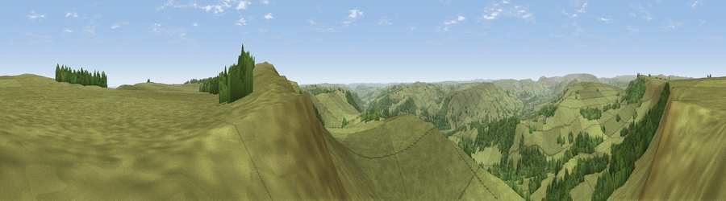

Viewpoint near Hathersage
#10331 in England · top 10% of its area beats it · near HathersageThe view, rendered

A 360° render of this exact spot computed from the terrain model, tree cover and land cover — summer colours, afternoon light, calibrated against photographs of famous viewpoints. Real trees, hedges and buildings will differ in detail.
The panorama
Grey silhouette: terrain skyline in each direction (720 bearings, Earth curvature and refraction included). Dashed green: skyline with trees (+15 m) and buildings (+8 m) as obstacles. Blue strip: how far the ground is visible on each bearing.
Where the view opens
Wedge length = distance to the farthest visible ground on that bearing (vegetation-aware). Rings at 10, 25 and 50 km.
What fills the view
90% grassland · 10% woodland
Angular shares of the visible panorama (visual magnitude), not map area. Landscape diversity 0.15 (0–1 Shannon).
Key numbers
More beautiful places nearby
The staircase of upgrades: each row has a higher view potential than everything closer. Driving times are estimates from straight-line distance, calibrated against real road routing — check an actual route before setting out.
| Place | Direction | Drive | Score |
|---|---|---|---|
| Viewpoint near Hathersage | NNW · 1 km | ~2 min | 62.8 |
| Viewpoint near Hathersage | SE · 1 km | ~3 min | 70.9 |
| Viewpoint near Thornhill | NW · 7 km | ~15 min | 74.1 |
| Viewpoint near Wharncliffe Side | NNE · 15 km | ~26 min | 75.2 |
| Wild Bank | WNW · 29 km | ~46 min | 76.2 |
| Viewpoint near Carrbrook | WNW · 30 km | ~47 min | 77.1 |
| Viewpoint near Mow Cop | SW · 46 km | ~67 min | 78.9 |
| Viewpoint near Mow Cop | SW · 47 km | ~67 min | 80.2 |
53.34805, -1.63381 · source: screening · position refined by local search. Computed location — check access rights before visiting.